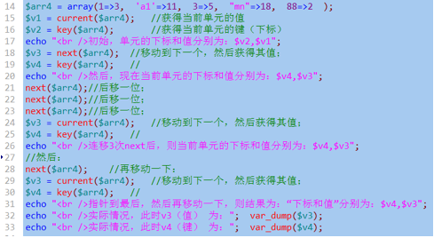
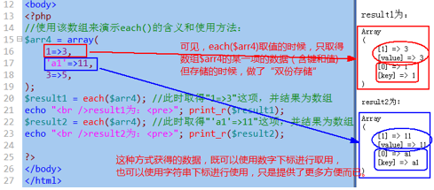
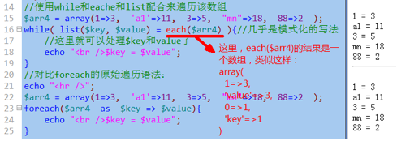
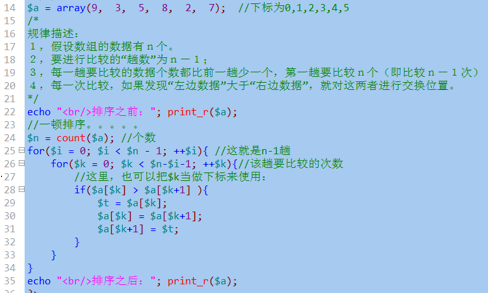

function f1($x, $y){
$re = $x + $y;
return $re;
}
$x = 1;
$v1 = f1($x, 2);
function 函数名 （形参1，形参2， .... ）{
//形参就是“变量名”；
//。。。。。
}
函数名（实参1，实参2， .... ）；
//实参就是“数据值”；
则调用函数，实际最开始发生的事情是：将实参的数据值，传递形参的变量名；
1, 首先，将实参的数据值，传递形参的变量名
2，程序执行流程进入函数内部开始执行；
3，函数执行结束，就返回到“调用位置”；
3.1：如果函数内部碰到return语句，则也同样立即返回“调用位置”；
function 函数名 （形参1，形参2=值）{。。。}；
形参，默认情况下都是使用值传递；
但：
使用“&”来修饰一个形参时，就可以实现“引用传递”
此时，对应实参就要求必须是“变量”；
function 函数名 （形参1，&形参2， .... ）{。。。}
可以定义不定个数形参的函数，只要在函数内部使用如下3个“系统函数”来确定实参：
func_get_args(); //返回所有实参（结果是一个数组）
func_get_arg($i); //返回第i个实参（i从0开始算起）；
func_num_args(); //返回实参的个数；
function 函数名（）{
。。。。。
return XX数据值；
}
当一个函数有返回值时：函数调用语句就应该当做一个“值”（数据）去使用；
类比：一个变量的作为取值的使用场合有：
$s = $v1; //取得v1的值，并赋值给s
$s = $v1 + 3 ; //取得v1的值，并进行计算
echo $v1; //取得v1的值，并输出；
echo $v1 + 3; //取得v1的值，并进行计算
func1(1, 2, $v1); //取得v1的值，并作为函数调用的实参
则，一个有返回值的函数调用语句，跟上述变量的使用几乎一样！
我们假设函数调用语句为f1(1,2) ，则示例如下：
$s = f1(1,2); //取得f1的返回值，并赋值给s
$s = f1(1,2) + 3 ; //取得f1的返回值，并进行计算
echo f1(1,2); //取得f1的返回值，并输出；
echo f1(1,2)+ 3; //取得f1的返回值，并进行计算
func1(1, 2, f1(1,2)); //取得f1的返回值，并作为函数调用的实参
但：如果一个函数没有返回值，则其调用形式，几乎只有一种情况(假设为f2）：
f2(11,22); //那就是成为一条独立语句！
可变函数：就是使用一个变量来代表函数名；
$s = “f1”; //一个字符串而已；
$s(); //其实是在调用函数f1——当然，前提是有该函数；
匿名函数：
形式1：
$f1 = function (形参.....){。。。。}；
$f1(); //调用该匿名函数；
形式2：直接就当做“其他函数”的一个实参来使用，其调用是在“其他函数”内部进行。
func3(1, 2, function (形参.....){。。。。} ) ; //这里其实是调用函数func3
3个作用域，对应3种范围的变量：
局部作用域：局部变量；
全局作用域：全局变量；
超全局作用域：超全局变量；
$v1 = 1;
$v2 = 2;
function f1(){
global $v1;
echo $v1; //输出1；
echo $GLOBALS[‘v2’]; //输出2
}
fuction_exitst(“函数名”)； //判断该函数是否被定义过了（是否存在）；
代码模式：
function f1($n){
if($n == 最小级){
return 已知的值；
}
$result = 对 f1( $n-1) 进行一个简单计算；
return $result;
}
$qian = 已知的值； //通常就是指最小级的数据值，是已知的；
for($i = 最小级的下一级， $i <= 目标级数； ++$i){
$result = 对 $qian 进行一个简单计算；
$qian = $result; //将当前求得的结果值，当做“要求的下一级的”前一个值；
}
最后$result 就是结果；
含义：
数组就是一系列数据的集合体，他们按设定的顺序排列为一个“链的形状”。
注意：php中的数组单元的顺序，跟下标无关！
$arr1 = array(3, 11, 5, 18, 2 );//这是最常见的数组，下标为“默认下标”，就是从0开始的整数；
$arr2 = array(“a”=>3, “bb”=>11, “cc123”=>5, ‘d1’=>18, ‘xyz’=>2 );关联数组，下标为字符串，常见
$arr3 = array(1=>3, 10=>11, 3=>5, 0=>18, 88=>2 );下标可以人为给定；
$arr4 = array(1=>3, ‘a1’=>11, 3=>5, ‘mn’=>18, 88=>2 );下标可以数字和字符串混合使用；
$arr5 = array(5=>3, 11, 3=>5, ‘mn’=>18, 2 ); //有指定下标，也有“自动下标”，
//此时下标为：5，6，3，”mn”, 7
//可见，自动下标为“前面最大数字下标+1”
$arr6 = array(5=>3, 7.7=>11, 3=>5, ‘mn’=>18, 2 ); //此时下标为：5，7，3，”mn”, 8
$arr7 = array(5=>3, true=>11, false=>5, ‘mn’=>18, 2 ); //此时下标为：5，1，0，”mn”, 6
$arr8 = array(1=>3, 3=>33, true=>11, ); //此时下标为：1，3,其对应值为：11, 33
//下标如果有重复，后面的值覆盖前面的值；
$arr9 = array(1=>3, -3=>33, 11, ); //此时下标为：1， -3， 2，注意：最后一个逗号“可以有”。
其他一些形式：
$arr10[] = 3;
$arr10[] = 11;
$arr10[] = 5; //该数组下标为0,1,2，常规情况
$arr11[‘a’] = 3;
$arr11[‘bb’] = 11;
$arr11[‘cc123’] = 5; //该数组下标为’a’,’bb’,’cc123’，常规情况
$arr12[1] = 3;
$arr12[] = 11; //此时下标为2
$arr13[‘cc123’] = 5; //该数组下标为1,2,’cc123’
特别注意：php中，数组单元的顺序，是由其“放入”顺序决定，而不是下标。
$v1 = $arr1[0];
$i = 3;
$v2 = $arr1[$i]; //取得数组下标为3的单元的值；
总体上，可以将取得一个数组的单元的值，看组取得一个变量的值完全一样！！！
索引数组：通常认为，如果一个数组的下标是严格按照从0开始的连续的整数作为下标，则称其为索引数组——就是类似js数组的下标。例如：
$arr1 = array(3, 11, 5, 18, 2 );//这是最常见的数组，下标为“默认下标”，就是从0开始的整数；
关联数组：通常认为，如果一个数组的下标都是一个“字符串”并一定程度上表名了该单元的“含义”，则称为关联数组，例如：
$conf = array(
‘host’=>”localhost” ,
‘port’=>3306 ,
‘username’=>’root’ ,
‘password’ => ‘123’ ,
);
混合数组：既有数字下标，也有字符下标的情况：
$arr4 = array(1=>3, ‘a1’=>11, 3=>5, ‘mn’=>18, 88=>2 );下标可以数字和字符串混合使用；
一维数组：
$a = array(1, 11, 111);
$b = array(2, 22, 222);
$c = array(3, 33, 333);
二维数组：
$dd = array(
array(1, 11, 111),
array(2, 22, 222),
array(3, 33, 333)
);
多维数组：无非就是继续里面再用数组代替。
有关数组的交换，再说两句：
$a = array( 3, 11, 5, 7, 20, 18); //下标是0,1,2,3,4,5
需求1：交换数组第0项和第3项：
$v1 = $a[0];
$v2 = $a[3];
$t = $v1;
$v1 = $v2;
$v2 = $t; //这种做法根本不行，因为v1，v2只是2个变量，跟数组没有关系了！
正确的做法是：
$t = $a[0];
$a[0] = $a[3];
$a[3] = $t;
需求2：交换数组首项和末项：
$pos1 = 0; //首项的下标
$pos2 = count($a) - 1; //最后一项的下标
$t = $a[$pos1];
$a[$pos1] = $a[$pos2];
$a[$pos2] = $t;
需求3：交换数组最大项和最小项：
$pos_max = ....; //经过一番计算得到最大项的下标；
$pos_min = ....; //经过一番计算得到最小项的下标
$t = $a[$pos_max];
$a[$pos_max] = $a[$pos_min];
$a[$pos_min] = $t;
foreach( $数组变量名 as 【$key =>】 $value ){
//循环体；这里可以去“使用”$key 和 value；
//$key 和 $value 就是该遍历语句一次次取得的数组的每一个单元（项）的下标和对应值。
//而且，它总是从数组的开头往后按顺序取数据。
}
首先，看看数组的一个“形象图”：
$arr4 = array(1=>3, ‘a1’=>11, 3=>5, ‘mn’=>18, 88=>2 );
可以将其以视觉化的方式理解为：
|
数组下标： |
1 |
“a1” |
3 |
“mn” |
88 |
|
对应数据： |
8 |
11 |
5 |
18 |
2 |
其中，该箭头，就是数组内部的所谓“指针”——注意，不可见，不可输出，只是一种辅助理解的图形！
说明：
1，该箭头，就是数组内部的所谓“指针”
2，默认情况下，该指针指向数组的第一个单元。
3，数组的有关单元的操作，如果没有指定下标，则就是针对该指针指向的单元的操作。
4，所谓遍历，其实就是一次次取得当前单元的键和值，并放入对应的变量$key, $value,然后移动指针到下一个单元。
则，数组，作为一个“总体数据单位”，有如下指针操作函数可以使用：
1，$v1 = current($数组); //获得数组的当做指针所在单元的“值”；
2，$v2 = key($数组); //获得数组的当做指针所在单元的“键”（下标）；
3，$v3 = next($数组); //先将数组的指针移向下（后）一个单元，然后取得该新单元的值；
4，$v4 = prev($数组); //先将数组的指针移向上（前）一个单元，然后取得该新单元的值；
5，$v5 = end($数组); //先将数组的指针直接移向最后一个单元，然后取得该新单元的值；
6，$v6 = reset($数组); //先将数组的指针直接移向第一个单元，然后取得该新单元的值；

foreach( $数组变量名 as $key => $value ){
//循环体；这里可以去“使用”$key 和 value；
//$key 和 $value 就是该遍历语句一次次取得的数组的每一个单元（项）的下标和对应值。
//而且，它总是从数组的开头往后按顺序取数据。
}
其基本原理示意图如下：
输出结果为：
可见：遍历之后，指针已经超出数组合理位置了。
注意：对php数组，往往不能单纯使用for循环进行遍历。
或者说：php中，使用for循环只能循环“下标为连续的纯整数数组”；
结果：
each()函数的作用：先取得一个数组的“当前单元”的下标和值（并放入一个数组），然后将指针移到下一个单元。
使用形式：
$a = each($数组名); //此时$a就是一个数组了

list()函数用于一次性取得一个数组中从0开始的数字下标的多个单元的值！
形式：
list($变量1，$变量2，$变量3， .. ） = $数组；
作用：
上述一行代码相当于如下代码：
$变量1 = $数组[0];
$变量2 = $数组[1];
$变量3 = $数组[2];
........
注意：这里变量的个数，要跟该数组的数字下标的单元对应，如果某个变量对应的该数字下标不存在，就会报错！

· foreach也是正常的循环语法结构，可以有break和continue等操作。
· 遍历过程中值变量默认的传值方式是值传递。
结果为：
· 遍历过程中值变量可以人为设定为引用传递：foreach($arr as $key => &$value){ ... }
结果为：
· foreach默认是原数组上进行遍历。但如果在遍历过程中对数组进行了某种修改或某种指针性操作，则会复制数组后在复制的数组上继续遍历循环（原数组保持不变）。
以下演示的是“foreach默认是原数组上进行遍历”的效果：
然后，再演示：在某些情况下（修改或指针操作），不是在原数组身上进行遍历。
结果为：
· foreach中如果值变量是引用传递，则无论如何都是在原数组上进行。
结果为：
结果为：
更多排序函数，请查手册：
手册》函数参考》与变量有关的扩展》数组》Sorting Arrays
演示数组为：
$a = array(9, 3, 5, 8, 2, 7); //下标为0,1,2,3,4,5
演算过程描述：
从数组的左边开始，依次两两比较相邻的2个数据的大小，如果发现左边的比右边的大，则将他们进行交换。这样进行“一趟”之后，必然可以确定最大的一个数据放在最右边。
按此方式，对“剩余的数据”继续进行下一趟，则有会确定这些剩余数据耳朵最大值放在剩余位置的最右边。
演示：
|
原始数组： |
9 |
3 |
5 |
8 |
2 |
7 |
|
第1趟后： |
3 |
5 |
8 |
2 |
7 |
9 |
|
第2趟后： |
3 |
5 |
2 |
7 |
8 |
9 |
|
第3趟后： |
3 |
2 |
5 |
7 |
8 |
9 |
|
第4趟后： |
2 |
3 |
5 |
7 |
8 |
9 |
|
第5趟后： |
2 |
3 |
5 |
7 |
8 |
9 |
规律描述：
１，假设数组的数据有ｎ个。
２，要进行比较的“趟数”为ｎ－１；
３，每一趟要比较的数据个数都比前一趟少一个，第一趟要比较ｎ个（即比较ｎ－１次）
４，每一次比较，如果发现“左边数据”大于“右边数据”，就对这两者进行交换位置。
代码演示如下：

演示数组为：
$a = array(9, 3, 5, 8, 2, 7); //下标为0,1,2,3,4,5
演算过程描述：
求得一个数组的最大值的下标，并将这个最大值下标的单元跟最后一个单元进行交换；
然后，继续从剩余数据中取得最大值的下标，并将这个最大值下标的单元跟剩余的最后一个单元交换
以此类推，直到只剩下一个数据，就不用找了。
演示：
|
原始数组： |
9 |
3 |
5 |
8 |
2 |
7 |
|
第1趟后： |
7 |
3 |
5 |
8 |
2 |
9 |
|
第2趟后： |
7 |
3 |
5 |
2 |
8 |
9 |
|
第3趟后： |
2 |
3 |
5 |
7 |
8 |
9 |
|
第4趟后： |
2 |
3 |
5 |
7 |
8 |
9 |
|
第5趟后： |
2 |
3 |
5 |
7 |
8 |
9 |
规律描述：
１，假设数组的数据有ｎ个。
２，要进行查找最大值单元并进行交换的“趟数”为ｎ－１；
3，每一趟都要求出“剩余数据”中的最大值单元，并且，剩余数据的数量每一趟都少1个，第一趟有n个。
4，每一趟找出最大值单元后，都要进行交换：最大值单元，跟剩余数据中的最后一个单元交换。